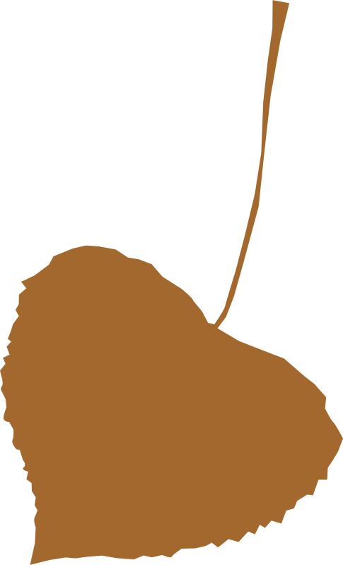 
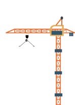 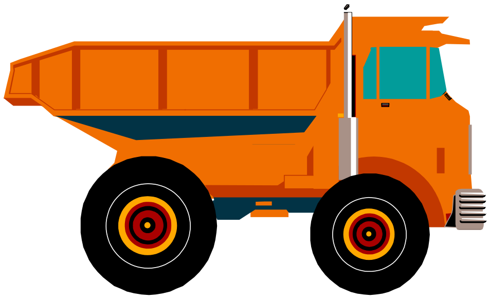 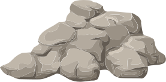 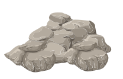 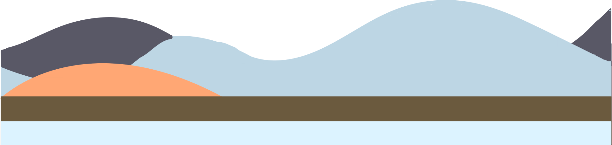 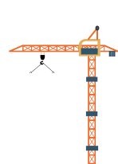 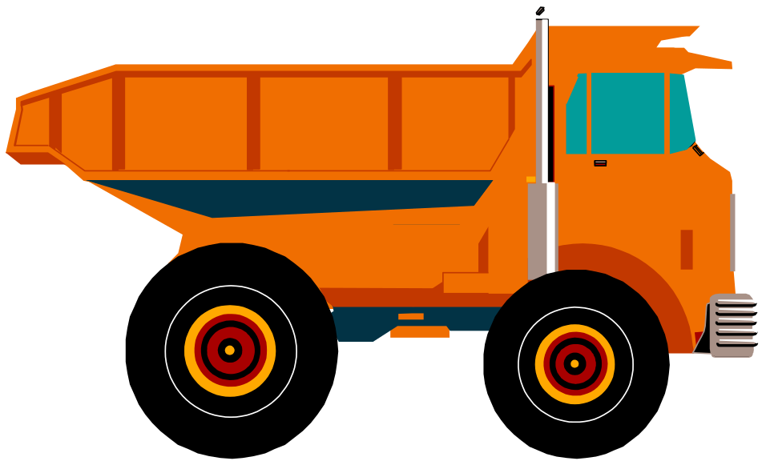 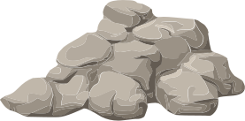 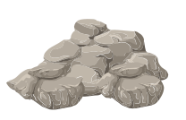 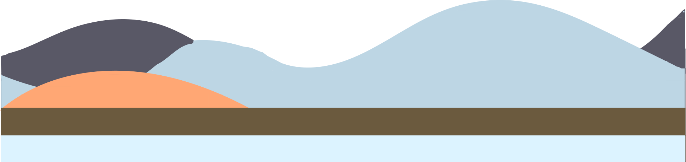MakeMIT is a hardware hackathon that allows undergraduates to showcase their innovative spirit through large-scale projects, ranging from a driver-exhaustion moniter, to a toaster that prints your morning news. Our fast-paced structure produces an atmosphere of creativity and collaboration as makers work in teams of up to five to create their product. MakeMIT provides cutting edge technology, tools, materials, and mentorship, empowering students to turn their crazy ideas into reality.
9:00-10:00 AM: Maker Registration
10:00-11:00 AM: Opening Ceremony
11:00 AM: Making begins
11:00 PM: Stop heavy tooling
11:30 PM: Stop making for the day
7:00-11:00 AM: Resume Making
11:00 AM-2:00 PM: Judging
2:00-3:00 PM: Closing Ceremony